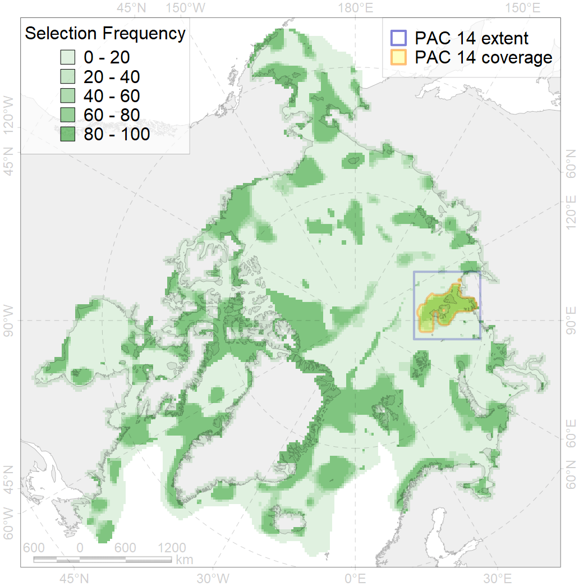
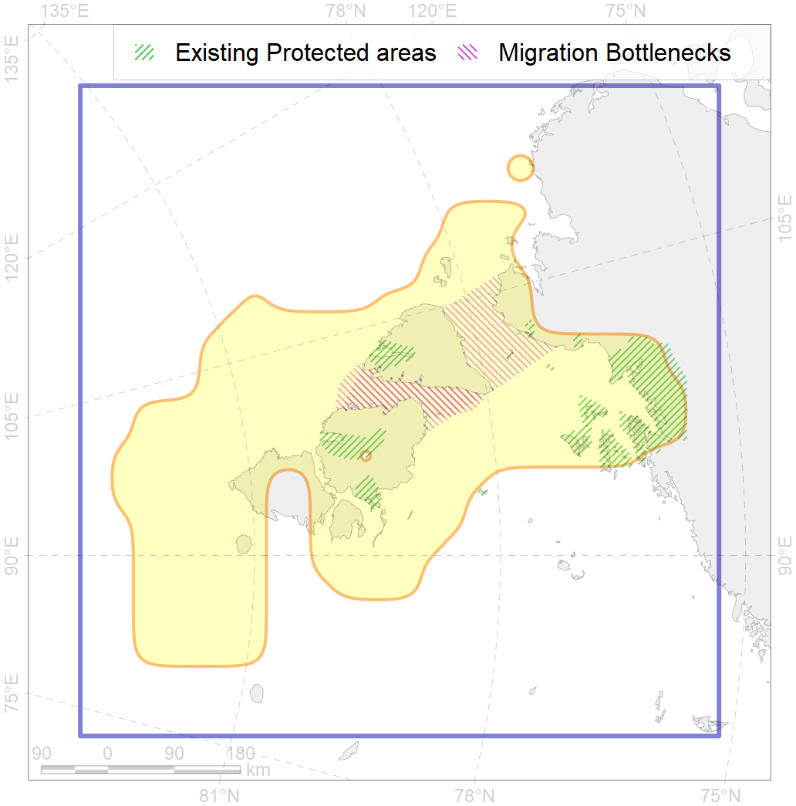

14
For more information regarding this PAC and to conduct custom spatial analysis using the PAC data or any spatial query, please consult Accenter.

1
CFs entirely within the PAC area
20
CFs at least 25% within the PAC area
20
CFs with at least 50% of their target achieved in the PAC
36
CFs with at least half of their target achieved in the PAC
| CF ID | CF Name | Proportion in the PAC | Conservation Target | Contribution to ArcNet Target Achievement | PAC’s Contribution to the Achieved Target |
|---|---|---|---|---|---|
| 7251 | Severnaya Zemlya kelp patches | 100.0% | 30.0% | 320.8% | 100.0% |
| 3002 | Fast Ice distribution in the Severnaya Zemlya region | 97.5% | 6.0% | 1459.4% | 98.8% |
| 7111 | II.1.1.5. Severnaya Zemlya domain | 94.3% | 12.3% | 672.8% | 97.1% |
| 8043 | Severnaya Zemlya glacial termini | 92.9% | 50.0% | 165.7% | 96.3% |
| 3110 | Polynyas distribution in the Severnaya Zemlya region | 87.7% | 20.0% | 370.5% | 93.2% |
| 3111 | Polynyas distribution in the Western Laptev Sea region | 63.7% | 20.0% | 264.6% | 81.5% |
| 7116 | II.1.2.1. Kara Sea slope | 62.6% | 50.0% | 89.0% | 87.1% |
| 3028 | Marginal Ice Zone distribution in April in the Laptev Sea LME | 62.5% | 12.0% | 439.8% | 74.7% |
| 7110 | II.1.1.4. Voronin Trough | 59.6% | 35.0% | 74.3% | 72.1% |
| 3057 | Multiyear Ice distribution in September in the Laptev Sea LME | 56.1% | 18.0% | 260.3% | 95.1% |
| 6038 | Ivory gull (Pagophila eburnea) Kara Sea breeding colonies | 53.3% | 64.8% | 79.4% | 73.3% |
| 7220 | Kara Sea kelp patches (20, 21) | 50.0% | 30.0% | 163.3% | 95.1% |
| 3010 | Fast ice distribution in the Eastern part of the Kara Sea | 45.5% | 6.0% | 739.5% | 87.0% |
| 6097 | Ivory gull (Pagophila eburnea) Kara Sea breeding colonies buffer feeding area | 37.7% | 43.2% | 75.9% | 75.8% |
| 7102 | II.1.1.11. Northern Taymur Canyon | 33.7% | 27.0% | 107.3% | 91.4% |
| 2013 | Bearded seal whelping areas in the Laptev Sea | 28.2% | 24.0% | 100.9% | 47.5% |
| 6006 | Brent goose (Branta bernicla bernicla) breeding&moulting grounds | 27.2% | 18.0% | 138.9% | 43.3% |
| 3056 | Multiyear Ice distribution in September in the Kara Sea LME | 26.6% | 18.0% | 104.7% | 80.4% |
| 1013 | Laptev Walrus haulouts | 25.7% | 90.0% | 24.7% | 23.6% |
| 7117 | II.1.2.2. Laptev Sea slope | 25.4% | 35.0% | 60.5% | 60.1% |
| 7101 | II.1.1.10. Laptev outer shelf | 24.6% | 15.0% | 153.5% | 93.4% |
| 2049 | Ringed seal whelping areas in the Kara Sea | 23.5% | 24.0% | 87.9% | 46.5% |
| 9012 | polar bear of the LV (Laptev Sea) subpopulation distribution | 22.7% | 26.4% | 73.7% | 60.9% |
| 6028 | Glaucous gull (Larus hyperboreus hyperboreus) breeding grounds | 22.1% | 12.0% | 161.6% | 25.4% |
| 9028 | polar bear denning areas of KS (Kara Sea) subpopulation | 21.9% | 52.8% | 35.9% | 35.7% |
| 3038 | Marginal Ice Zone distribution in July in the Kara Sea LME | 21.4% | 24.0% | 69.5% | 54.1% |
| 7118 | II.1.2.3. Laptev Sea slope canyons | 20.1% | 25.0% | 66.1% | 56.7% |
| 6089 | Little Auk (Alle alle polaris) breeding colonies buffer feeding area | 19.6% | 36.0% | 46.4% | 27.2% |
| 7108 | II.1.1.2. Eastern Kara insular areas and banks at middle and outer shelf | 18.3% | 17.8% | 86.8% | 57.6% |
| 9010 | polar bear of the KS (Kara Sea) subpopulation distribution | 14.8% | 26.4% | 46.2% | 45.1% |
| 7026 | Eurasian shelf region | 14.5% | 8.6% | 130.7% | 53.3% |
| 6040 | Ivory gull (Pagophila eburnea) postbreeding grounds in the Barents and the Kara Sea | 13.7% | 21.6% | 49.6% | 23.3% |
| 6003 | Little Auk (Alle alle polaris) breeding colonies | 13.1% | 54.0% | 22.0% | 12.3% |
| 9030 | polar bear denning areas of LV (Laptev Sea) subpopulation | 12.8% | 52.8% | 21.2% | 21.2% |
| 5007 | Beluga of the Barents-Kara-Laptev Sea stock general distribution | 10.2% | 24.0% | 37.4% | 25.0% |
| 5090 | Narwhal in the Russian Arctic assumed summer range | 9.8% | 12.0% | 53.9% | 31.2% |
| 4090 | Fish zoogeography, Arctic Region, Subarctic Transitional-Atlantic Province, Euro-Asian Bathyal District | 9.4% | 15.9% | 43.3% | 24.1% |
| 7109 | II.1.1.3. Middle and outer eastern shelf of Kara Sea | 8.1% | 5.6% | 117.3% | 61.1% |
| 4036 | Distribution of the Borisov’s Arctic cod (Arctogadus borisovi) | 8.0% | 13.2% | 54.3% | 23.9% |
| 3009 | Fast ice distribution in the Western part of the Laptev Sea | 7.5% | 6.0% | 104.1% | 27.6% |
| 2011 | Bearded seal whelping areas in the Kara Sea | 7.3% | 24.0% | 25.8% | 25.2% |
| 3013 | Fast ice distribution in the Central part of the Kara Sea | 7.1% | 6.0% | 100.2% | 19.1% |
| 7025 | Eurasian bathyal region | 6.9% | 10.6% | 41.4% | 11.1% |
| 4010 | Feeding area of the Muksun (Coregonus muksun) | 6.7% | 32.4% | 18.9% | 18.6% |
| 6099 | Black-legged kittiwake (Rissa tridactyla tridactyla) breeding colonies buffer feeding area | 6.1% | 64.8% | 8.1% | 8.1% |
| 7115 | II.1.1.9. Laptev middle shelf | 5.9% | 15.0% | 32.3% | 17.4% |
| 2061 | Ringed seal circumpolar foraging areas as predicted by MIZ distribution | 5.5% | 24.0% | 18.1% | 9.5% |
| 7175 | VII.2. Amundsen and Nansen Basins VII.2.1. Rises (slope foot) | 5.5% | 11.9% | 11.9% | 11.8% |
| 7035 | Siberian shelf region | 5.4% | 8.6% | 58.3% | 16.6% |
| 3039 | Marginal Ice Zone distribution in July in the Laptev Sea LME | 5.2% | 24.0% | 18.7% | 16.0% |
| 1014 | Laptev Walrus Whelping patches | 5.1% | 24.0% | 15.5% | 6.6% |
| 4076 | Fish zoogeography, Arctic Region, High-Arctic Shelf Province, N Barents – Kara-Sea District | 4.9% | 7.1% | 58.3% | 15.1% |
| 4008 | Feeding / nursery area of the Arctic Cisco (Coregonus autumnalis), Eurasian populations | 4.7% | 38.4% | 11.2% | 10.5% |
| 4058 | Range of the Arctic flounder (Liopsetta glacialis) | 4.6% | 6.0% | 69.2% | 8.9% |
| 7113 | II.1.1.7. Laptev shelf coastal domain | 3.9% | 14.2% | 23.8% | 13.0% |
| 4030 | Feeding area of the Arctic charr (Salvelinus alpinus), anadromous populations | 3.9% | 38.4% | 9.2% | 8.1% |
| 8021 | Kara Sea estuaries | 3.7% | 28.0% | 13.1% | 11.6% |
| 4018 | Feeding area of the Vendace, Least cisco (Coregonus sardinellа), Euro-Asian populations | 3.5% | 24.0% | 12.8% | 6.7% |
| 4021 | Feeding area of the Inconnu (Stenodus leucichthys nelma), Euro-Asian populations | 3.3% | 32.4% | 9.1% | 7.7% |
| 4015 | Feeding area of the Broad whitefish (Coregonus nasus), American populations | 2.9% | 32.4% | 7.9% | 6.7% |
| 4014 | Feeding area of the Siberian whitefish (Coregonus pidschian) | 2.9% | 24.0% | 11.0% | 6.9% |
| 4037 | Distribution of the Glacial cod (Arctogadus glacialis) | 2.9% | 9.0% | 25.9% | 6.2% |
| 7177 | VII.2.3. Abyssal hills | 2.5% | 8.6% | 7.8% | 7.4% |
| 7114 | II.1.1.8. Laptev inner shelf | 2.2% | 6.6% | 29.4% | 6.6% |